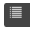
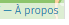
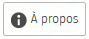
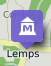

Carte interactive
Pour une navigation plus pratique, nous vous invitons à visualiser la carte en plein écran.
Tutoriel rapide
Au fur et à mesure de la lecture de ce tutoriel, cliquez sur "Recadrer la carte" pour revenir directement à la carte.
Après le téléchargement de la carte, seule la délimitation d'ARCHE AGGLO est représentée sur le fond de carte (au besoin, dézoomez). Si un panneau latéral s'ouvre à droite, vous pouvez le fermer.
Vous avez la possibilité de sélectionner manuellement les données que vous souhaitez visualiser à l'écran. Les données sont regroupées sur différentes couches (mairies, associations à l'aise avec le numérique...), dont la liste est accessible en survolant le bouton de tri des données . Pour afficher une couche à l'écran, il suffit alors de cliquer sur . Les couches déjà visibles figurent dans la liste avec le bouton , sur lequel vous pouvez cliquer pour rendre la couche invisible. Au bas de la liste, dans la même fenêtre, le bouton "Visualiser les données"  permet d'ouvrir un tableau des données dans un panneau latéral.
Un autre menu vous sera très utile dans votre recherche d'informations : le menu "À propos". Vous y trouverez des informations supplémentaires sur les couches sélectionnées, notamment des renseignements sur nos sources. Il y a deux moyens d'accéder à ce menu, le plus simple étant de cliquer sur le lien  dans les mentions légales en bas de la carte. L'autre méthode est de cliquer sur le bouton  lorsqu'un panneau latéral de visualisation des données est ouvert.
La plupart des données est visible sur la carte sous forme de marqueurs cliquables. Par exemple, pour les mairies c'est le pointeur  qui s'affiche. En cliquant sur un marqueur, vous verrez apparaître un panneau latéral avec toutes les informations dont nous disposons sur la structure associée. Certains marqueurs sont dotés d'un numéro, pouvant aller de 1 à 6, par exemple . Il évalue le niveau d'aisance de la stucture avec le numérique et l'informatique, telle qu'elle s'est auto-évaluée.
N'hésitez pas à nous faire part de vos éventuelles remarques ou questions.
Bonne navigation !